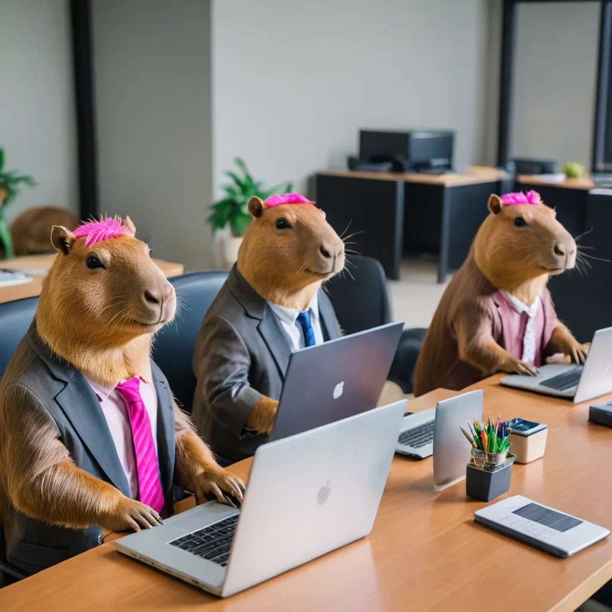
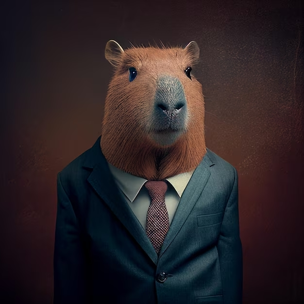
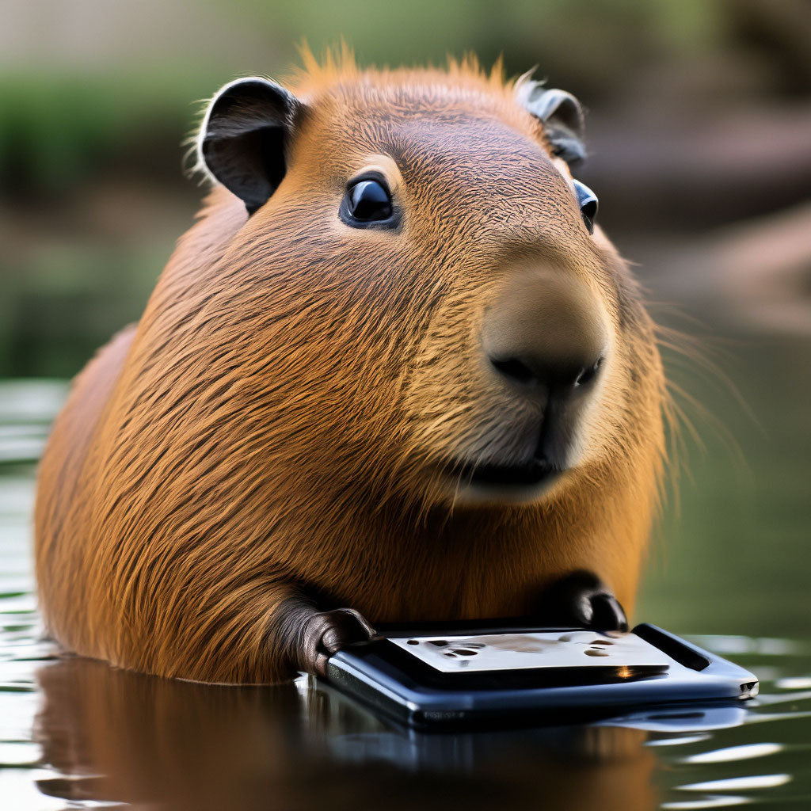
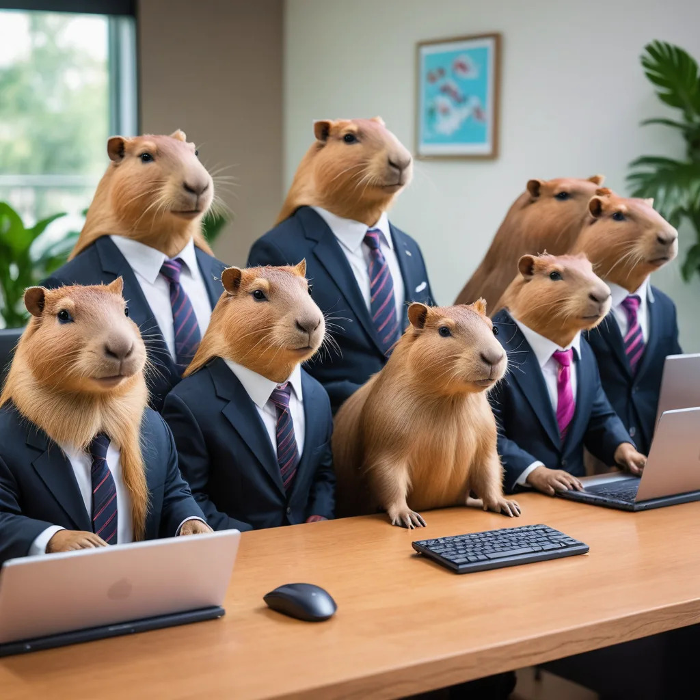
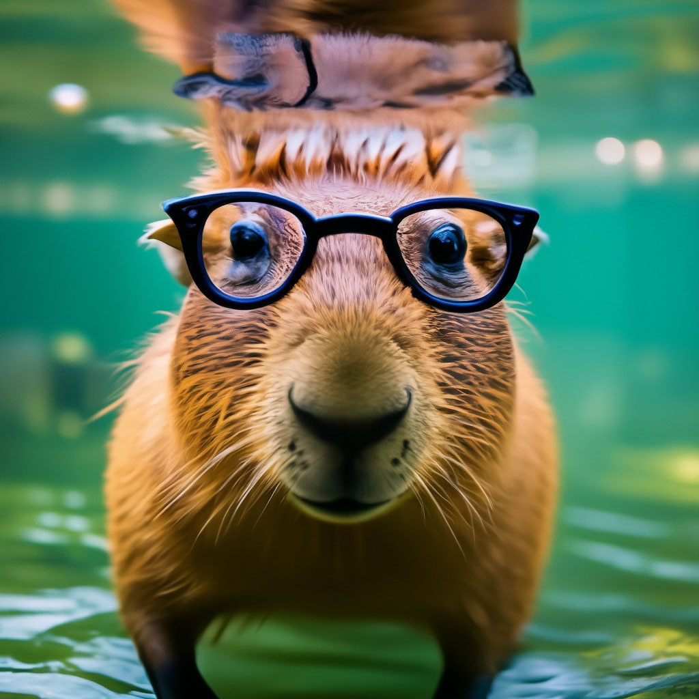

#LAPTOPS AI
Нейросеть для определения дефектов на ноутбуках
ABOUT PROJECT

Наш проект называется #LAPTOPS AI, и он использует машинное обучение для анализа данных о ноутбуках и выявления потенциальных неисправностей.

Мы использовали PyTorch и YOLA11 для разработки нейросети.

На данный момент наша нейросеть может определить разные типы неисправностей с высокой точностью.
ABOUT US

Наша команда ANOTHER DAY WITHOUT SLEEP 52 создала сайт с нейросетью, которая помогает определить неисправности ноутбуков
Наша цель - помочь людям быстро и точно определить проблемы с их ноутбуками и найти решения.

Мы гордимся нашим проектом и надеемся, что он будет полезен многим людям.